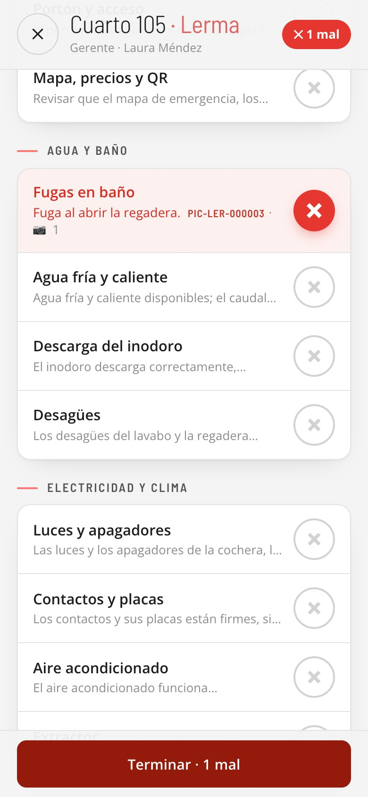
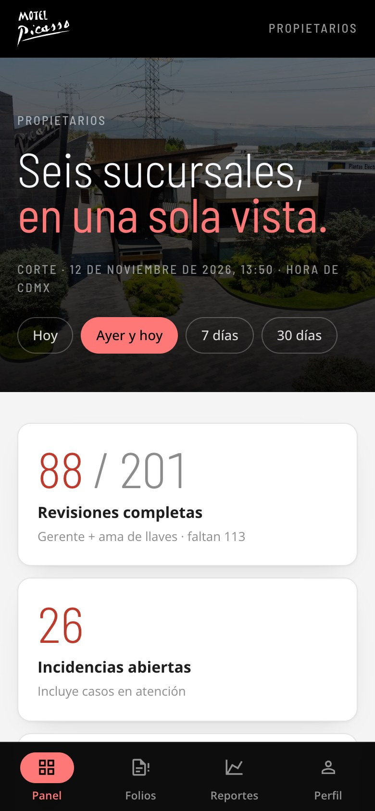
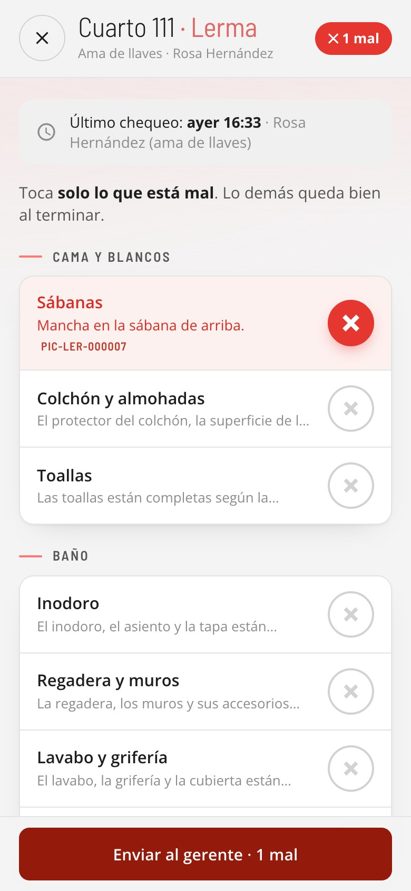
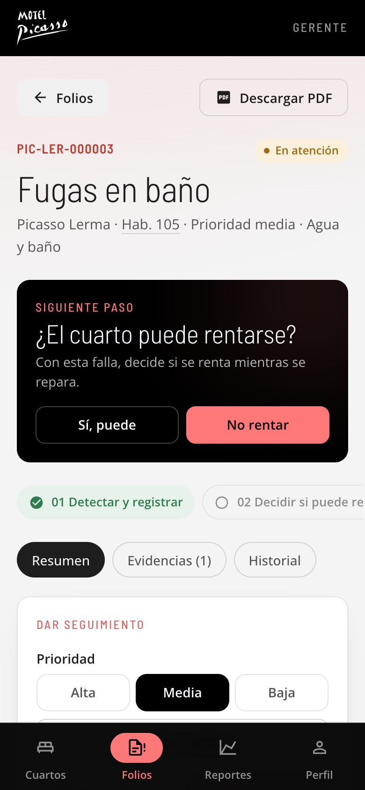
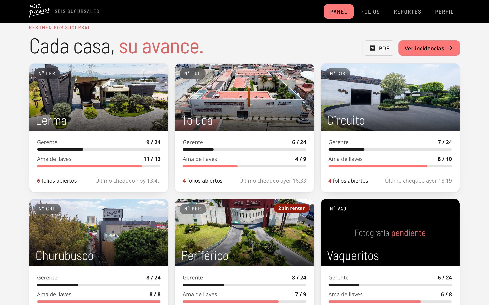
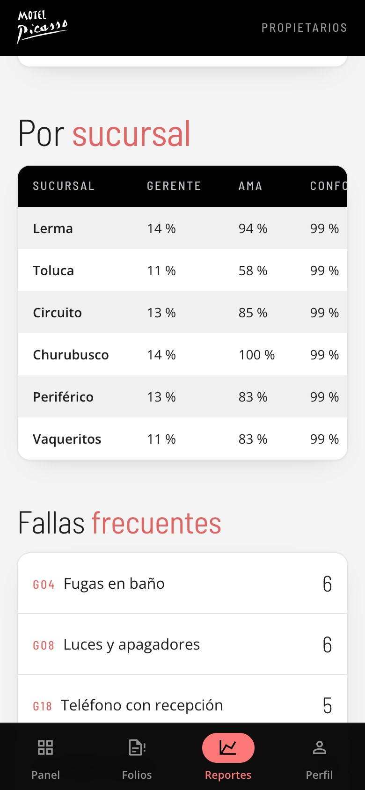
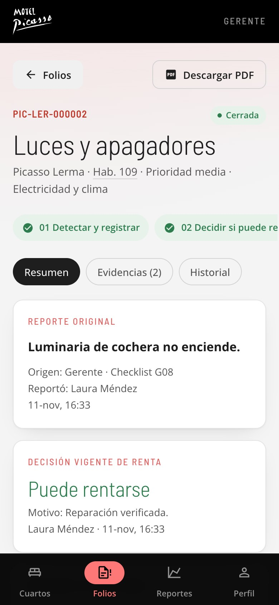
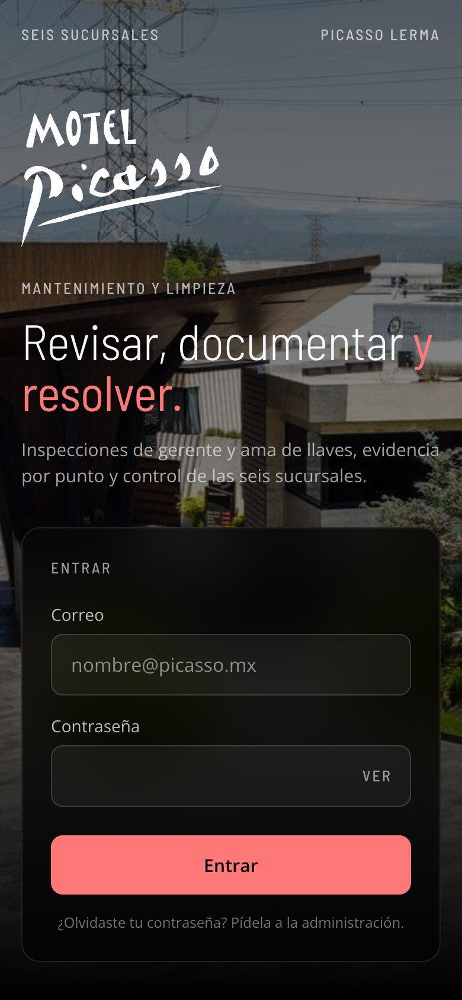

La app de mantenimiento y limpieza de las seis sucursales de Motel Picasso ya está construida. Aquí está lo que hace hoy y lo que podemos lograr juntos.


6sucursales en un solo panel
4puestos: ama de llaves, gerente, propietarios y administración
54puntos de checklist, más el equipo de cada cuarto
4reportes en PDF: revisión, cuarto, folio y grupo
CometaX Company · Folleto de entrega · Motel PicassoNoviembre 2026
01Lo que Picasso ya tiene
Su checklist, ahora en el celular.
La app sigue el documento de mantenimiento y limpieza de Picasso: 25 puntos del gerente y 29 de la ama de llaves, más el equipo propio de cada cuarto. Cada revisión queda con nombre, fecha y hora.

1Se toca solo lo que está malLa ama de llaves marca la falla con foto y la envía al gerente. Lo demás queda «Bien» al terminar.
2El gerente sabe qué sigue«Tu siguiente paso» le dice qué toca: lo que envió la ama, folios nuevos y cuartos por revisar hoy.

3Cada falla es un folioCon número consecutivo, foto y responsable. El gerente decide si el cuarto se renta mientras se repara.
Ama de llavesRevisa el cuarto después de cada limpieza, desde el celular.
GerenteRevisa, decide la renta y cierra los folios con evidencia.
PropietariosVen las seis sucursales, los folios y los reportes.
AdministraciónCuartos, equipo, personal y reglas de cada sucursal.
CometaX Company · Folleto de entrega · Motel PicassoCapturas de la app con datos de ejemplo · 2 / 8
02Para la dirección
Las seis sucursales en una sola vista.
Sin llamar a cada gerente ni esperar a la visita: el Panel dice cómo va cada casa en este momento.
Panel de propietarios · Motel Picasso


Decisiones con datos, no con suposiciones
Cumplimiento de revisiónCuántas revisiones se hicieron contra las que tocaban, por puesto y por sucursal.
Folios abiertos y el más antiguoQué falla sigue sin resolverse y desde cuándo.
Cuartos que no pueden rentarseLa decisión vigente del gerente, con su motivo.
Tiempo de solución, reincidencias y fallas frecuentesDónde se repite el problema y cuánto tarda en arreglarse.
Reportes en PDFDel periodo, de un cuarto, de un folio o de una revisión, listos para imprimir o mandar.
FinanzasIngresos de Kairos contra gastos desglosados por artículo, con su auditoría y el archivo para E-Cont.
CometaX Company · Folleto de entrega · Motel PicassoCapturas de la app con datos de ejemplo · 3 / 8
03El día a día
Lo que cambia en cada puesto.
Con hojas y mensajes, el trabajo se hace, pero la información se queda en papeles y en celulares. La app la junta en un solo lugar.
Ama de llaves
Con hojas y mensajesLa hoja se llena al final del turno y la falla se avisa de palabra; la foto, si la hay, se queda en su celular.
Con la appDesde el cuarto toca solo lo que está mal, con foto, y lo envía al gerente. Lo demás queda «Bien» con su nombre y la hora.
Gerente
Con hojas y mensajesTiene que preguntar qué cuartos faltan, qué quedó pendiente de ayer y si una reparación ya se terminó.
Con la app«Tu siguiente paso» le dice qué toca. Decide si el cuarto se renta, asigna quién repara y cierra el folio con la foto de la reparación.
Propietarios
Con hojas y mensajesSe enteran de una falla cuando visitan la sucursal o cuando alguien les avisa, y es difícil saber cuánto tardó en arreglarse.
Con la appVen las seis sucursales en el Panel, abren el expediente de cualquier folio y descargan el reporte del periodo en PDF.
Administración
Con hojas y mensajesCada sucursal lleva su propio control y lo que tiene cada cuarto vive en la memoria del gerente.
Con la appDa de alta cuartos, equipo y personal. Lo que tiene cada cuarto entra solo a su checklist y las reglas de cada sucursal se ajustan sin programar.
Nadie tiene que acordarse: la app se acuerda.
Se espera menos llamadas para saber cómo va cada sucursal, menos fallas olvidadas y cuartos que vuelven antes a la renta.
Supuesto: el personal usa la app en cada revisión. Lo confirmamos con números en el piloto, contra la línea base de las primeras semanas.
CometaX Company · Folleto de entrega · Motel Picasso4 / 8
04Ninguna falla se pierde
De la falla a la reparación, con evidencia.
Así recorre la app una falla, de principio a fin. Cada paso queda con nombre, fecha y hora, y nadie puede borrarlo después.
1Se detectaSe marca en el checklist con foto y se abre el folio PIC-LER-000003.2Se decide la rentaEl gerente decide si el cuarto se puede rentar mientras se repara, y por qué.

3Se repara y se cierraSolo el gerente cierra, con la foto de la reparación y lo que se corrigió.4La dirección lo veEl folio cuenta en el Panel y su expediente queda para consulta y en PDF.
Foto al abrir y al cerrarLa falla se documenta con foto y no se cierra sin la foto de la reparación.
La renta, con motivoCada decisión de renta queda con su motivo, fecha y nombre, aparte del folio.
Historial que solo creceEl reporte original y cada cambio se conservan: siempre se sabe quién hizo qué y cuándo.
CometaX Company · Folleto de entrega · Motel PicassoCapturas de la app con datos de ejemplo · 5 / 8
05Por qué está bien hecho
Hecho para durar, no solo para la demo.
Lo que no se ve en la pantalla es lo que permite confiar en ella todos los días y hacerla crecer sin empezar de nuevo.
Probado antes de entregar
21 pruebas automáticas cubren las reglas y los reportes, y las listas de QA traen 56 casos para marcar Pasa o Falla, a mano, antes de liberar.
Seguro desde el servidor
Contraseñas cifradas, cuenta bloqueada 15 minutos tras 5 intentos fallidos, permisos por puesto y sucursal revisados en el servidor y fotos privadas con ligas que caducan.
Aguanta poca señal
Si se va la señal a media revisión, lo marcado se guarda en el celular y se sube solo al volver. Por ahora las fotos se toman con conexión; dejarlas en cola es parte de lo que sigue.
Documentado completo
Documentación técnica de 49 páginas, completa y por tema, más manual de usuario por puesto. Quien llegue después entiende el sistema sin depender de una sola persona.
A la medida de Picasso
Lo que el documento deja abierto —cada cuánto revisa el gerente, cómo se cuenta a la ama y el tipo de checklist— se ajusta por sucursal, sin programar.
Crece sin reescribir
Más sucursales, más carga o una app para huéspedes: crece por escalones, cuando una medición lo pide. Y la plataforma no paga licencias.
Lo que Picasso recibe
La appSe instala desde el navegador del celular, sin tienda de apps.
DocumentaciónTécnica, completa y en 7 temas, en PDF.
Manual de usuarioPaso a paso, por puesto.
Listas de QA56 casos para probar antes de liberar.
Listo para servidorArchivos de producción con HTTPS y respaldos por programar.
Construido con
CometaX Company · Folleto de entrega · Motel Picasso6 / 8
06Lo que podemos hacer juntos
De la demo a las seis sucursales.
Un camino por etapas: cada una deja algo funcionando y se decide la siguiente con lo que se midió.
1
Lista para producciónServidor y dominio propios con HTTPS, respaldos programados, la app sin modo demo y el código en su repositorio.Esfuerzo bajo
Lo que gana PicassoLa app en su propia dirección, segura y con respaldos: lista para el personal.
2
Piloto en una sucursalCuartos, equipo y personal reales; confirmar con la dirección las reglas abiertas y probar en los teléfonos del personal.Esfuerzo medio
Lo que gana PicassoLa línea base: cuánto se revisa hoy y cuánto tarda una reparación, medido y no supuesto. Con eso se fijan las metas.
3
Las seis sucursalesAlta del resto de sucursales, capacitación por puesto y revisión de indicadores al primer mes.Esfuerzo medio
Lo que gana PicassoLas seis casas en el Panel con datos reales y el personal usándola con confianza.
4
Más fácil para el personalAvisos al gerente cuando la ama envía fallas, fotos en cola sin señal, recuperación de contraseña por correo y, si hace falta, app de tienda.Esfuerzo medio a alto
Lo que gana PicassoEl gerente se entera al momento y nadie se queda atorado por la señal o por una contraseña.
Más adelante
Crecer cuando se midaTendencia mes contra mes, horas de cuarto fuera de renta, un servidor más grande cuando la carga lo pida y una app para huéspedes (el QR de quejas y sugerencias).
Lo que gana PicassoSaber cuánto cuesta un cuarto fuera de renta y escuchar al huésped, sobre la misma base.
Alcance, fechas y montos de cada etapa: a confirmar con CometaX Company. Las metas se fijan con la línea base del piloto.
CometaX Company · Folleto de entrega · Motel Picasso7 / 8
COMETAXcometax.click
Preparado para
07El siguiente paso
Agendemos la revisión del piloto.
Una reunión con la dirección para dejar todo listo y arrancar en una sucursal:
Recorrido por la app en sus propios teléfonos, por puesto.
Las tres reglas por confirmar: cada cuánto revisa el gerente, cómo se cuenta a la ama y el tipo de checklist.
Elegir la sucursal del piloto y quiénes la usan primero.
Alcance y montos de las etapas 1 y 2.
Llevamos la documentación técnica, el manual de usuario y las listas de prueba impresas.

CometaX — Tecnología diseñada para resolver, evolucionar y escalar.
cometax.click@cometaxcompany
CometaX Company · Folleto de entrega · Motel Picasso8 / 8